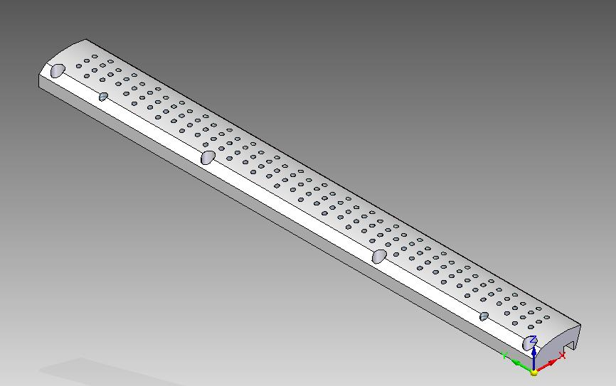
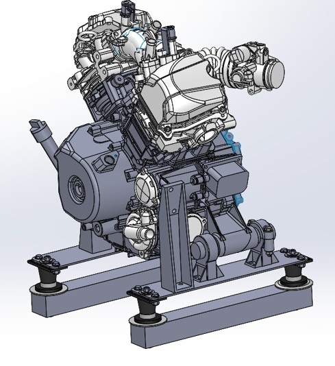
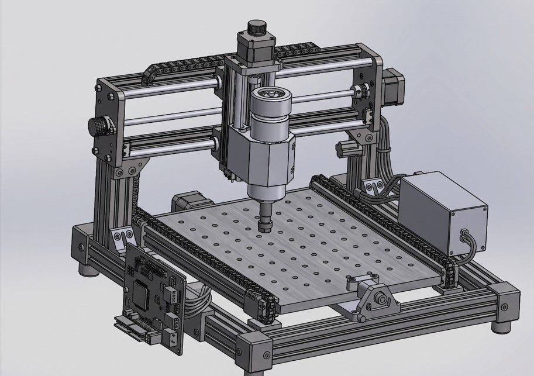
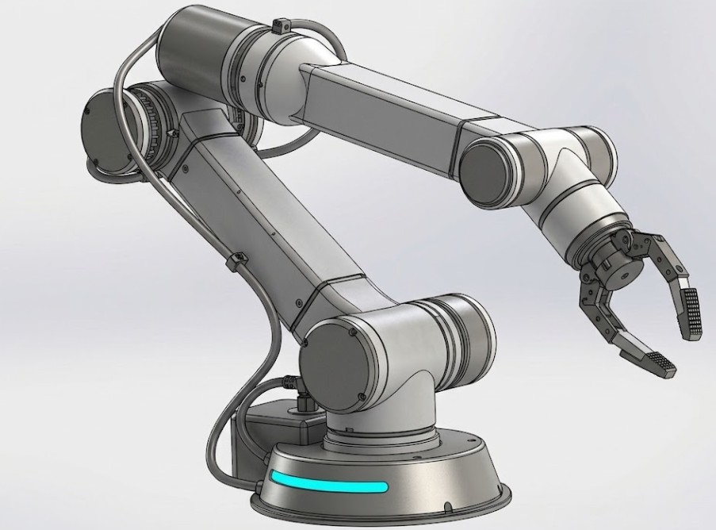
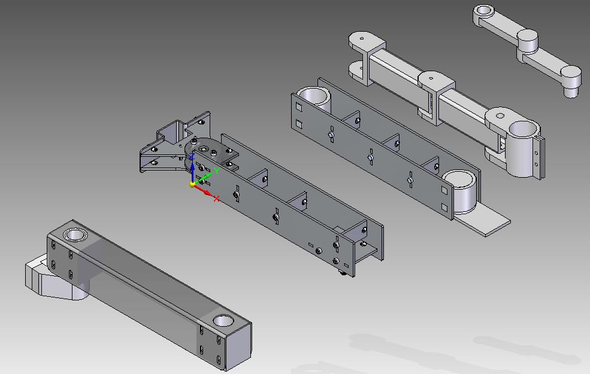

Projects
A few highlights — click any project, or view the full list below.

Featured
Optimized Aircraft Landing Gear Link Design
School Project
Featured
Reverse-Engineered Vacuum Plate
Internship
Featured
Hovercraft Engine Mount Design
School Project
Featured
Desktop CNC Mill (Work in Progress)
Personal
Featured
4-Axis SCARA Robot Arm (Work in Progress)
Personal
Featured